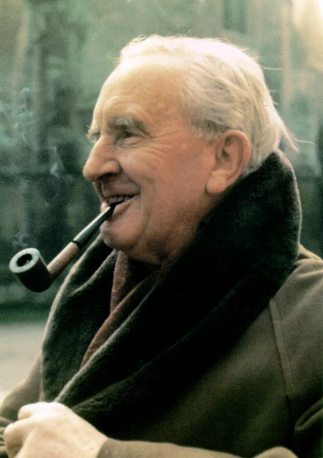
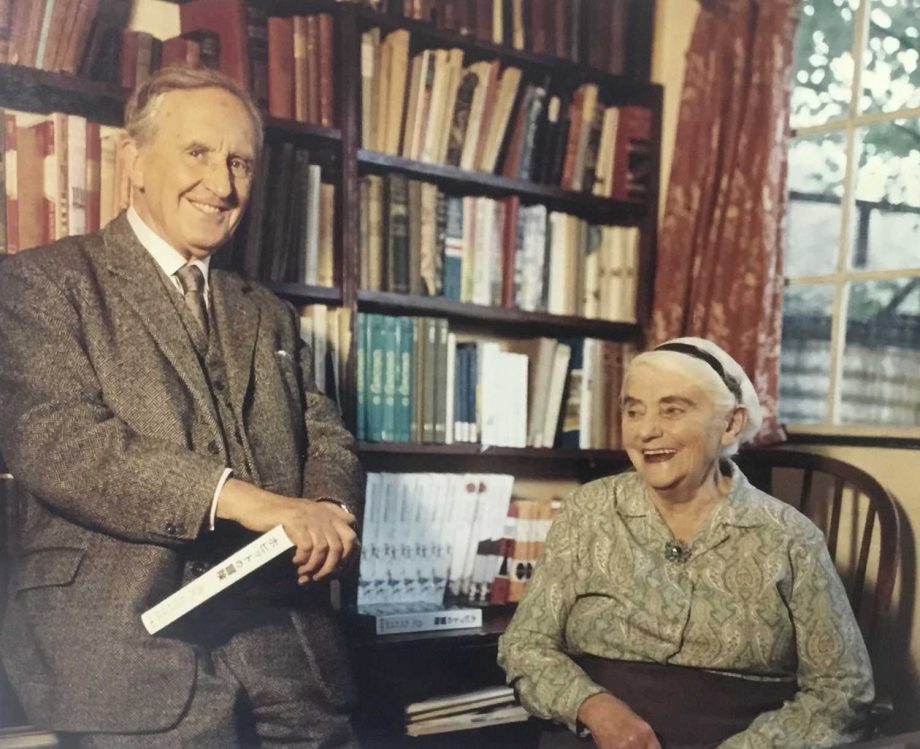

Galeria
 
J.R.R. Tolkien, nascido em 3 de janeiro de 1892 na África do Sul, foi um renomado escritor, filólogo e professor universitário. Sua vida foi marcada por uma profunda paixão por linguagens e mitologias. Tolkien ficou órfão aos 12 anos, o que influenciou sua obra, especialmente a trilogia "O Senhor dos Anéis". Durante sua carreira acadêmica, lecionou em Oxford, destacando-se em estudos anglo-saxônicos. A criação de idiomas como o élfico e o khuzdul, assim como a construção de um extenso legendarium para a Terra Média, refletiram sua dedicação à construção de mundos fantásticos. Tolkien começou a escrever "O Hobbit" para seus filhos, mas o sucesso levou à trilogia épica. Sua obra influenciou a literatura fantástica e a cultura pop. Tolkien faleceu em 2 de setembro de 1973, mas seu legado perdura, continuando a encantar leitores e inspirar adaptações cinematográficas.